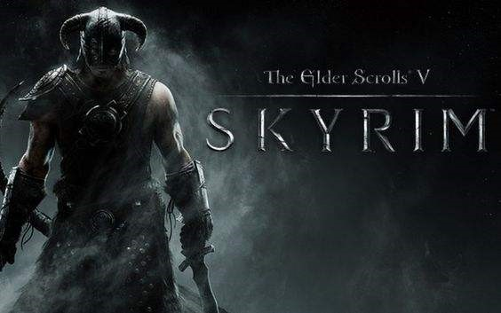

The Creation Engine is a 3D video game engine created by Bethesda Game Studios based on the Gamebryo engine.
The Creation Engine has been used to create role-playing video games, like The Elder Scrolls V: Skyrim including Special Edition (Remastered Edition on consoles) and Fallout 4.
Development
The Creation Engine is an in-house engine created by Bethesda Game Studios (XnGine being the previous in-house engine by Bethesda).
After using Gamebryo to create The Elder Scrolls III: Morrowind, The Elder Scrolls IV: Oblivion, and Fallout 3, Bethesda decided that Gamebryo's graphics were becoming too outdated and began work on Creation Engine for their next game, The Elder Scrolls V: Skyrim.
The Creation Engine offers basic real-time shadows and more detail to distant objects.
The updated version of the Creation Engine, that is powering Bethesda's Fallout 4, offers physically-based rendering, dynamic volumetric lighting, and more advanced character generation.
Features
Havok Behavior is a flexible animation tool that allows the developers to blend animations together in a few clicks. This means that animations like walking and running can be blended together seamlessly to make the animations look much more realistic. This important addition enabled Bethesda to improve character animations in their games.
• An upgraded version of Radiant AI allows non-player characters (NPCs) to dynamically react and interact with the world around them. The player can observe an NPC eat breakfast, go to work, go to the pub, and then go to sleep. The improved AI allows NPCs to react to the player's actions and they can become friendly or hostile to the player because of their actions.
• Radiant Story allows for NPC's to dynamically create new quests for the player in unexplored places.
• In previous games, Bethesda licensed Speed Tree for trees and foliage, but when making Skyrim with Creation Engine, the Bethesda team made their own foliage rendering system. The new system is capable of rendering larger amounts of foliage at one time and allows for more freedom with animations.
Creation Kit
The Creation Kit is a modding tool for Creation Engine games.
The Creation Kit takes advantage of the Creation Engine's modular nature.
It was created by Bethesda Game Studios for the modding community of The Elder Scrolls series.
The tool can be used to create worlds, races, NPCs, weapons, update textures, and fix bugs.
Mods created using this tool are hosted on the Steam Workshop, Nexus Mods, Bethesda.net and various other sites.
A Fallout 4 compatible Creation Kit was released in April 2016.
Games using Creation Engine
• The Elder Scrolls V: Skyrim (2011)
